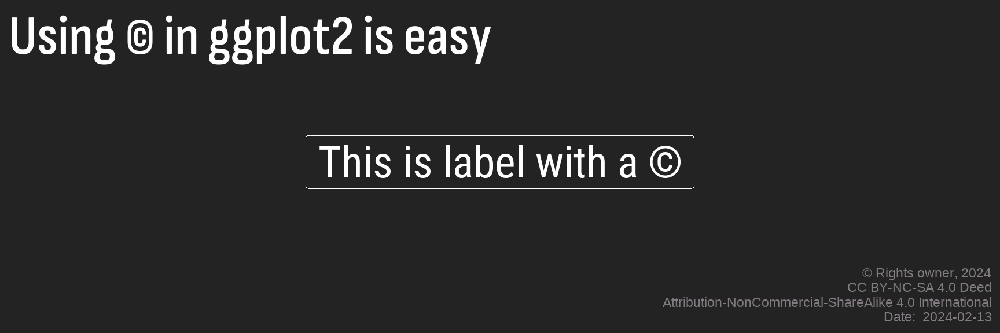

Introduction
Thing is that I build a lot of HTML reports in Rmarkdown using interactive features of DT tables & ggiraph pictures. I do like it and am living under impression that most of those who get my reports like this format as well. Or they would tell me, wouldn’t they?
Most often the reports have the Creative Commons license. I usually mark the images with a copyright sign in ggplot2 caption, which is easy to do with a unicode letter (U+00A9), and describe the CC terms in the special section of the report using a ready-to-go html snippet from Creative Commons.
Life was fine until one guy asked me why I use a copyright sign and not the creative commons. It didn’t take much time to find a news that starting from Match 2020 the latest version of the Unicode Standard includes Creative Commons (CC) license symbols.

Now I am recalling that there was something. At the very moment I decided to try to use these unicode symbols, I had a feeling. Now I know that my subconscience did warn me that this would be very much not like having fun, but I could not imagine to what extent and did not listen.
In this post below I am going to describe the different approaches I used to incorporate CC lisense symbols into my Rmarkdown reports. This story can hurt some feelings, IT professionals are warned.
The last preparation, a theme for ggplot.
Show code
library(extrafont)
my_theme <- theme_void()+
theme(text=element_text(family="Roboto Condensed", color = "#53565A", size = 13),
panel.background = element_rect(fill = "#ffffe7", color = "#dfe6e9", size = 0.5),
panel.grid.major = element_blank(),
axis.ticks = element_line(size=0.3, linetype = 1, color="grey10"),
plot.caption = element_text(size = rel(1), hjust=1, color = "#969696"),
plot.title = element_text(size=rel(1.3), margin = margin(0,0,5,0),
face="bold", color = "#4582ec"),
plot.margin = margin(2, 2, 2, 2), plot.title.position = "plot")Trivial: (c) in image, (cc) in html as text
This way is simple – just paste U00A9 preceded by a backlash into any string and it will bring you a ©.
Once a copyright sign is in the image, an author can use different approaches to inform the readers about Creative Commons license.
- This infomation can be added into a ggplot2 caption. If the caption text is too long, it can be wrapped into a multi-line – either automatically with stringr::str_wrap(n) or manually (as on the picture avove).
- An html caption for images is another versatile alternative. Set up a special CSS-class so that the caption text can be visually associated with the images, and place the text there. John Allbritten wrote a very informative blog post about the image captions in Rmarkdown. For the picture below I used figcaption HTML tag and the code generated by Creative Commons web site – so this can get together a text, reference to the license text and the related CC image.
Show code
ggplot(data = tibble(x = "1", y = "1")) +
geom_text(aes(x = x, y = y), label="\U00A9",
size = 40, family="Arial", vjust = 0.5)+
labs(title = "Using \U00A9 in ggplot2 is easy",
caption = paste("\U00A9 Company X, 2021",
paste("Date: ", format(Sys.time(), '%m/%d/%Y')),
"some additional information", sep = "\n"),
x = NULL, y = NULL)+
my_theme This work is licensed under a Creative Commons Attribution 4.0 International License.
This work is licensed under a Creative Commons Attribution 4.0 International License.
But what about those Unicode symbols for Creative Commons licenses, how can we use ?
Web: in html
Using the Unicode symbols for Creative Common licenses in HTML is not as easy as with ©. The copyright symbol is present in all popular fonts, so one need just paste (which is a hexadecimal format of Unicode symbol U+00A9) in Rmarkdown document, and most viewers will see the correct symbol (©).
But this will not work with code (which is a hex representation for a Unicode symbol U+1F16D, corresponding to ). You may notice that this Unicode has 5-symbols (1F16D), while © in its Unicode format had only 4 (00A9). This is because the copyright symbol belongs to the basic section of the Unicode tables (named Latin-1 Supplement block of Unicode symbols), while the new Unicode symbols for CC belong to the extended part (named Enclosed Alphanumeric Supplement). The creators of the popular fonts that are currenty used in the browsers and Office programs seemed to focus on the main symbols of the Unicode Table, so most modern fonts have no graphical representation (a glyph) for Creative Common Unicode symbols. If you just put into Rmd text, most viewers will see hex-abracadabra in HTML output.
Yes, that’s correct – after few decades of talking and declarating about the Openness, we still have the browsers & the fonts that are not quite prepared to designate the open licenses. The only exclusion is ND symbol (its Unicode is U+229C).
This table in Wikipedia shows the fonts supporting Supplementary Multilanguage Plane. One of it is a GNU Unifont. Its “upper” companion (ttf, 2Mb) covers significant parts of the Supplementary Multilingual Plane (SMP).
I have also founded few fonts specifically designed to show CC symbols:
CC Icons, created by someone whose nickname on GitHub is richardba . Here is an installation guide.
CCSymbols by Daniel Aleksandersen
I do not review in details the technical aspects of how the fonts need to be attached to the Rmarkdown to appear in the produced HTML output. If you know how to deal with the CSS and the fonts, you can easily start using any of these fonts for your Rmarkdown documents. I will not be able to explain this properly, as I am a real noub in what concerns the web/css/js/etc.
But this can be avoided if you decide to use FontAwesome that also have CC icons – , , , , .
The fontawesome R package (by Richard Iannone ) makes it very easy to insert Font Awesome icons into R Markdown documents and Shiny apps.
The Distill blogs and web sites has a built-in support of Font Awesome, so you can just insert <i class="fab fa-creative-commons-nd"></i> in the Rmarkdown where needed.
Image: in images
My initial desire was to learn how to use Unicode letters in order to avoid insetting the tiny raster images of CC license PNGs into my SVG illustrations, produced by ggiraph.
To use one of the fonts mentioned above, a Windows user need to download the font and to install it to C:/Windows/Fonts.
Then there are few options:
- ragg If your RStudio is v.1.4 or higher, then according to this post (by Thomas Lee Pedersen ), setting up AGG in RStudio as a default graphic device together with agg_ functions will allow to use all the fonts installed in your system without any preparations.
I am still using Rstudio v.1.2., so I have to help R to see the system fonts (so to say), which can be done in few ways.
- extrafont. To add a new font one should use a workflow like below:
Show code
library(extrafont)
font_import(paths = "C:/Windows/Fonts/", pattern = "unifont_upper-14.0.01.ttf")
font_import(paths = "C:/Windows/Fonts/", pattern = "cc-icons.ttf")
font_import(paths = "C:/Windows/Fonts/", pattern = "CCSymbols.ttf")
extrafont::fonttable() # this command returns a list of available fonts- showtext. A typical workflow to add new fonts is as follows:
Show code
library(showtext)
library(systemfonts)
font_add(regular = "C:/Windows/Fonts/unifont_upper-14.0.01.ttf", family = "Unifont Upper")
font_add(regular = "C:/Windows/Fonts/cc-icons.ttf", family = "CC Icons")
font_add(regular = "C:/Windows/Fonts/CCSymbols.ttf", family = "CCSymbols")
systemfonts::system_fonts() # this command returns a list of available fonts Let’s see if 3 fonts I found earlier (Unifont Upper, CC Icons and CCSymbols) can do what I expect. In the chart below I mix a string “text” with the Unicode symbols for CC to see how the CC symbols look in the final text. I expect it to look like TextText.
Please notice that with CC Icons you should not be using the Unicode combinations, but the special letters (c - CC, by = BY, n = NC, s = SA, d = ND, so I used a string “cbynsd”).
Show code
chart <- ggplot(data = NULL, aes(x = 1)) +
geom_text(aes(y = "CCSymbols"), label="Text \U1F16D\U1F16F\U1F10F\U1F10E\U229C Text",
size = 10, family="CCSymbols", vjust = 0.25, hjust = 0)+
geom_text(aes(y = "Unifont Upper"), label="Text \U1F16D\U1F16F\U1F10F\U1F10E\U229C Text",
size = 10, family="Unifont Upper", vjust = 0.25, hjust = 0)+
geom_text(aes(y = "CC Icons"), label="Text cbynsd Text",
size = 10, family="CC Icons", vjust = 0.25, hjust = 0)+
scale_y_discrete(expand = expansion(add = c(0.5,0.5)))+
scale_x_continuous(expand = expansion(add = c(0.1, 1)))+
my_theme + theme(axis.text.y = element_text())
chart
And here we have few problems:
Unifont Upper fonts are of quality that limits its use for hi-res illustrations
Unifont Upper and CCSymbols symbols are larger than the text and the symbol for ND (U+229C)
CC Icons do not mix together with the strings.
So if we want to put CC symbols into a caption, we shall
either use CCSymbols enframed by the text and be ready for different sizes
or build a double caption (see an example at SO).
Both options will require some caution and limit the customization.
Show code
ggplot(data = NULL, aes(x = 1, y = "1")) +
geom_text(aes(x = 1), hjust = 1, vjust = 0,
label="Are we ready for", size = 11, family="Roboto")+
geom_text(aes(x = 1.02), hjust = 0, vjust = 0,
label = "\U1F16D", size = 10, family="CCSymbols")+
geom_text(aes(x = 1.1), hjust = 0, vjust = 0,
label = "?", size = 11, family="Roboto")+
scale_y_discrete(expand = expansion(add = c(0.5,0.5)))+
scale_x_continuous(expand = expansion(add = c(0.2, 0.2)))+
labs(title = "Using CCSymbols font for \U1F16D\U1F16F",
caption = paste0("Font:https://www.ctrl.blog/entry/creative-commons-unicode-fallback-font.html",
"\nThis image can be re-used via \U1F16D\U1F16F",
"\nDate: ", format(Sys.time(), '%m/%d/%Y')), x = NULL, y = NULL)+
my_theme+ theme(text = element_text(family = "CCSymbols"),
axis.text = element_blank(), axis.line = element_blank(),
axis.ticks = element_blank(), axis.title = element_blank(),
panel.grid.major.x = element_blank(),
panel.grid.major.y = element_blank())There is also emojifont package (by Guangchuang Yu ), which allows to use emojis and FontAwesome icons in ggplot2, but it contains only CC symbol. My attempt to fork & update its font database to include the other icons… failed, so I had to step back.
Short resume
I spent dozen of hours reading about graphic devices, Unicode hexabracadabra, code points, surrogate pairs, and other wild things. So far my solution is using FontAwesome for HTML and CCSymbols for images.
know where was my fault, I will be happy to hear this from you – send me an email and I will update this post with a reference to your support.